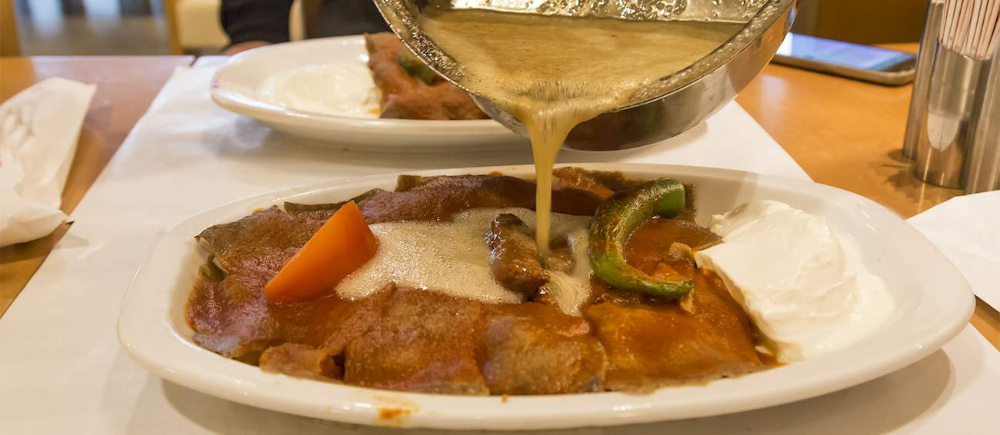

Iskender Kebab

Description
A specialty of the city of Bursa, İskender kebap is named after a butcher
called İskender Efendi, who first prepared this flavorful dish. It
consists of thinly sliced lamb that is grilled and combined with a spicy
tomato sauce and pita bread, while melted sheep butter and yogurt are
traditionally drizzled over the dish at the table.
Source.
It is recommended to pair this kebap with şıra, a Turkish beverage that is
known to aid digestion.
Ingredients
- 500g (1.1 lbs) tenderloin meat
- 500g (1.1 lbs) ground beef (or a mix of half lamb and half beef)
- 1 medium onion
- 1 tsp black pepper
- 1 tsp salt
- 1 medium onion
- 2 tbsp yogurt
- 1 tsp black pepper
- 1 tsp ground red pepper
- 1 tsp oregano (optional)
- 4-5 tbsp olive oil
- olive oil, a generous glug (or, a mix of olive oil and butter)
- 1-2 tbsp tomato paste
- 2 tomatoes, grated
- salt, pepper, ground red pepper (paprika), to taste
- 2 tbsp butter
- 4-5 tbsp olive oil
- hot water, as needed
-
2-3 tbsp butter or olive oil (or if you prefer to add some lamb tail
fat, traditionally it is a must-have for a deeper taste), or as needed
- grilled green peppers
- tomato wedges
- thick yogurt
- melted butter
Steps
-
Prepare the beef marinade first. Grate the onion or process it in the
food processor. Add the ground beef to the onions, then add the salt and
the pepper, and mix until well combined. Wrap in cling film and
refrigerate for 6-12 hours.
-
To make the tenderloin marinade, grate the onion or process it in a food
processor. Mix the onion with the yogurt, the black pepper, the red
pepper, the yogurt, and the olive oil. Mix the marinade with the
tenderloin in a big bowl, making sure the meat is well coated. Cover
with cling film and refrigerate for 12 hours.
-
The following morning, stack the two kinds of meat together. Take a
large freezer bag and stack the two kinds of meat inside the bag in
layers — first the tenderloin, then the beef. When done with stacking,
shape into a log and seal tightly.
-
Keep in the refrigerator until frozen or until you’re ready to cook the
meat — take the döner out of the freezer 10 minutes before you’re going
to cook the meat.
-
Before you start cooking the meat, prepare the tomato sauce. Add a
generous pour of olive oil to the pan. Place the pan over medium heat,
add the tomato paste and stir-fry it. Next, add the tomatoes and cook
until reduced by half, then add the seasonings and mix to combine. Add
the butter and the olive oil and stir until incorporated. Finally, pour
enough water until you have a thick sauce. Take off heat.
-
Take the döner out of the freezer and let it rest at room temperature
for 10 minutes.
-
After 10 minutes, using a sharp knife, shave slices of meat. Shave the
meat off of all sides of the meat as the outsides will soften sooner
than the insides.
-
Place a non-stick pan or cast iron pan over high heat. Add some olive
oil to the pan and add the slices of meat and fry, often turning, until
browned. Take care not to cook the meat too much as you risk ending up
with dry meat. Take the meat out of the pan, add some butter or olive
oil, then add a new batch of döner slices.
-
While the meat is cooking, grill the wedges of tomatoes and whole green
peppers in a pan with no added oil over medium heat. Turn them a few
times. They will be done when they have softened and have blackened on
the outside.
-
When you’ve done cooking the meat, heat the cubes of pide bread in the
same pan you cooked the meat in.
- Reheat the tomato sauce if it has cooled.
-
To assemble, slice the pide bread into same-sized cubes, then transfer
them directly onto a large oval plate. First, drizzle with tomato sauce,
then top generously with döner slices, then drizzle again with tomato
sauce.
-
Place two dollops of yogurt on one side of the plate, and place the
grilled vegetables on the other side of the plate.
- Finally, pour the hot, melted butter over the meat.